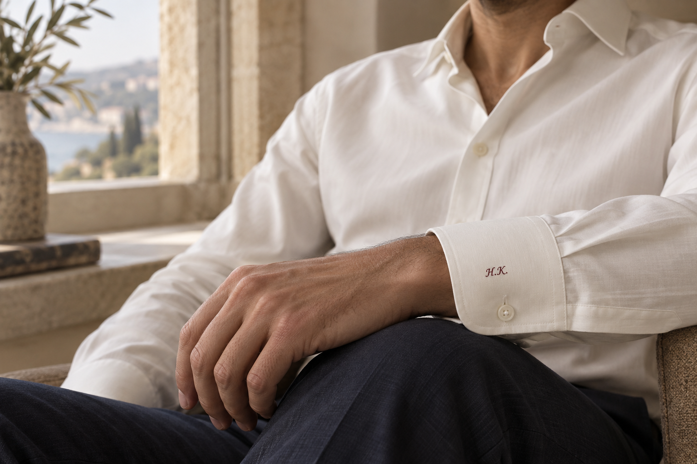
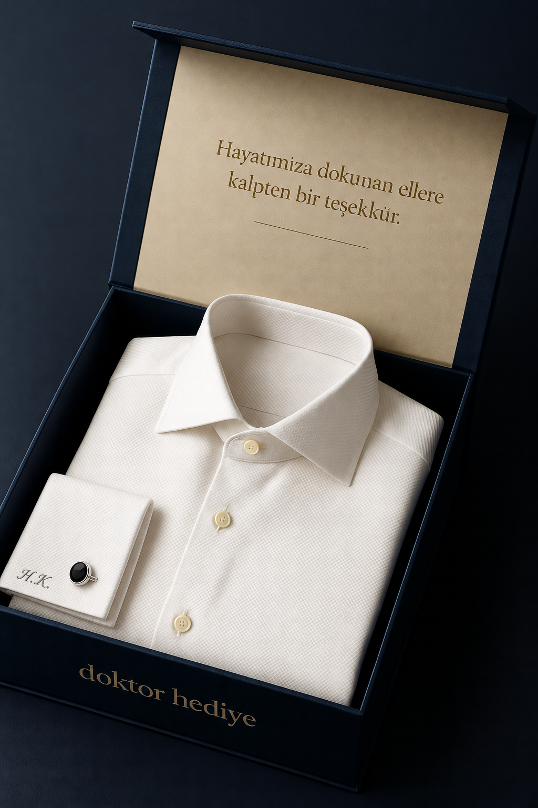
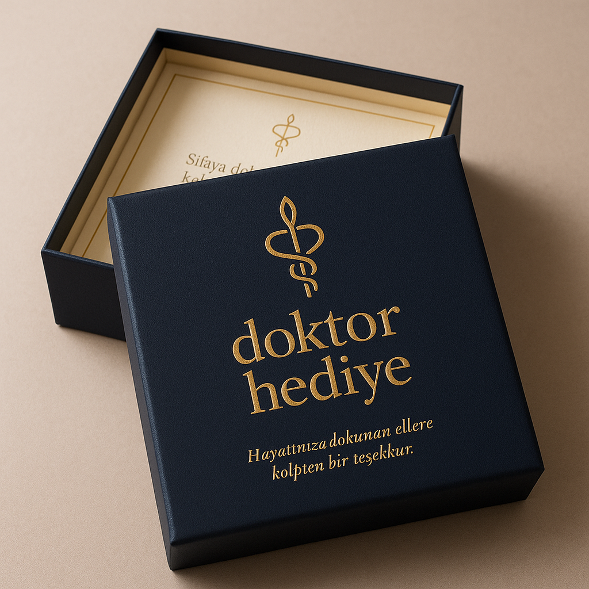
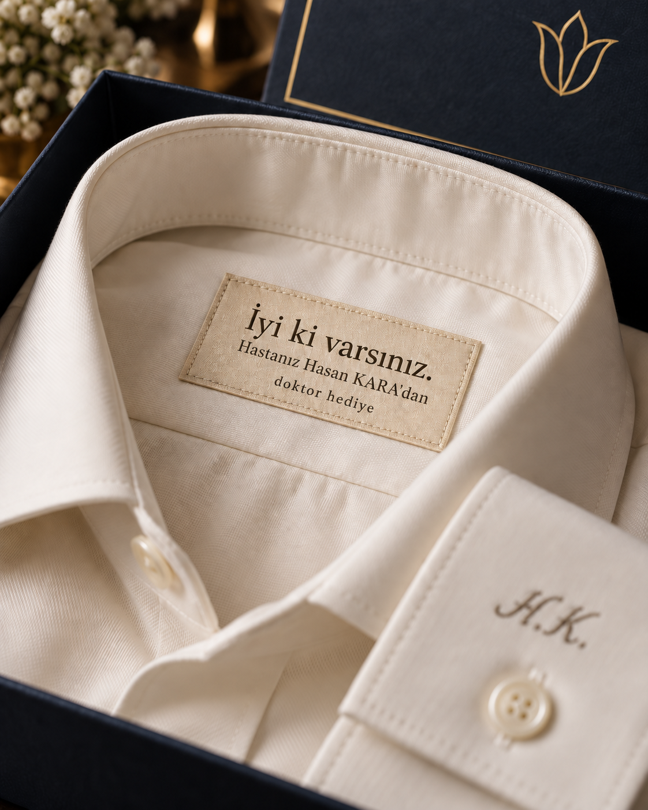

Doktorunuzu ve hediyenizi seçin
Doktorunuzu bulun, hediyesini seçin ve içinizden geçenleri küçük bir nota bırakın.
Hayatınıza dokunan doktorunuza; ölçüsüne, tarzına ve adına özel bir gömlek. Her dikişinde sizin teşekkürünüz.

İsminin baş harfleri. Kendi ölçüleri.
Başkasında olmayan bir hediye.
Muayene odasından günün son randevusuna.
Her ayrıntısıyla kişisel.
Sade bir yaka, özenli bir kesim ve manşette yalnızca ona ait bir imza.
Ceket kolundan görünen küçük bir monogram. Günün her anına eşlik eden, kişisel bir detay.
Görsellerdeki kişiler yapay zekâyla oluşturulmuş temsili modellerdir; gerçek doktor veya müşteri deneyimi değildir.
Manşetin ucunda zarif bir monogram. Tenine uyan bir kumaş. Tam ölçüsünde bir kesim.
Siz teşekkürünüzü seçin. Baş harflerinden manşet tercihine kadar son dokunuşları doktorunuzla birlikte belirleyelim.
Doktorunuzu bulun, hediyesini seçin ve içinizden geçenleri küçük bir nota bırakın.
Hediyeyi kabul ettiğinde ölçülerini ve kumaş tercihini doğrudan doktorunuzdan alalım.
Hediyeyi size gönderelim, doktorunuza kendi ellerinizle sunun. Dilerseniz notunuzla birlikte doğrudan doktorunuza ulaştıralım.
Özenle katlanan gömlek, küçük bir kişisel not ve sade bir kutu. Hediyenin her ayrıntısı, vermek istediğiniz duygunun bir parçası.
Özenli sunumGömleği ve kişisel detayları öne çıkaran, gösterişsiz bir hediye kutusu.
Sizin kelimelerinizTeşekkür notunuz, hediyenin içine eklenen ayrı bir kartta yer alır.
Son dokunuşMonogram ve manşet tercihi, doktorunuzun onayıyla tamamlanır.


İlginiz, emeğiniz ve
hayatıma kattıklarınız için…
İyi ki varsınız.
Hediye kartınız için küçük bir ilham.
Görseller sunum konseptidir. Kol düğmesi, Manşet Koleksiyonu’na isteğe bağlı eklenir; gömlek fiyatına dahil değildir.
Siyahın derinliği, gümüş tonunun sade parıltısı. Çift manşetli gömleğine eşlik eden, kendi kutusunda zarif bir kol düğmesi çifti.
Kol düğmesini gömlek seçiminin ardından ekleyebilirsiniz.
Manşette baş harfleri, kutuda sizin kelimeleriniz. Kişisel etiket fikriyle hediyenin anlamı, gömleğin içinde de saklı.
“İyi ki varsınız.” mesajının altında küçük bir imza: “Hastanız Hasan KARA’dan”. Gönderenin adı, teşekkürünüzün kimden geldiğini yıllar sonra da hatırlatsın. Etikette sizin adınız yer alır; son hali doktorunuzla birlikte netleştirilir.
Kişisel hediyesini seçin ↗Hasan KARA örnek gönderen adıdır. Etiket görseli kişiselleştirme konseptidir.
Hediye seçerken ölçü, kalıp veya kumaş bilmeniz gerekmez.
Görsellerdeki “H.K.” örnek bir uygulamadır. Hediye sahibinin baş harfleri, nakış rengi ve yerleşimi kendisiyle görüşülerek netleştirilir. Ton sür ton nakış daha sade; kontrast iplik daha belirgin bir görünüm verir.
İmza Gömlek düğmeli klasik manşetlidir. Manşet Koleksiyonu ise kol düğmesiyle kullanılan çift manşete sahiptir. Bu modeli seçtiğinizde Siyah Oval kol düğmesini bir çift olarak ekleyebilirsiniz. Ek ürün varsayılan olarak seçili değildir; seçildiğinde örnek 1.250 TL bedeli toplamda ayrı gösterilir. Kendi kol düğmesi kullanılacaksa eklemeden devam edilebilir.
Doktorunuz hediyeyi kabul ettikten sonra ölçü alma adımları paylaşılır. Kumaş, yaka ve kesim tercihleri doğrudan kendisiyle belirlenir. Hediyeyi siz teslim edecekseniz paket sizin adresinize gönderilir. Doğrudan doktorunuza gönderim seçerseniz teslimat adresini kendisinden alırız; doktorunuzun bedenini veya adresini bilmeniz gerekmez.
Teşekkür mesajının altına küçük ve zarif bir satırla gönderenin adı eklenebilir. Örneğin: “İyi ki varsınız.” altında “Hastanız Hasan KARA’dan”. Böylece hediye, kimden geldiğini hatırlatan kişisel bir hatıraya dönüşür. Görseldeki ad örnektir; sizin adınız ve etiket metni hazırlık aşamasında doğrulanır.
İçinizden gelen birkaç cümle yeterli. Adınız ve teşekkür mesajınız hediyeye eşlik eder. Notunuzu hediye seçiminin ardından ekleyebilirsiniz; özel sağlık bilgilerini yazmanız gerekmez.
İlk dizin Medipol kaynaklarıyla sınırlı. İsim görünmüyorsa benzer isimli başka bir doktoru seçmeyin. Gerçek satış öncesinde yeni doktor ekleme ve kurum doğrulama süreci açılacaktır.
Evet. Sipariş sırasında “Bana gönderin, ben hediye edeyim” seçeneğini seçebilirsiniz. Doktorunuzla ölçü ve tercihlerini netleştirdikten sonra ona özel dikilen gömleği, hediye kutusu ve notunuzla sizin adresinize göndeririz. “Doğrudan doktoruma gönderin” seçeneğinde ise paketi doktorunuzun onayladığı adrese ulaştırırız. Her iki seçenekte de kargo teslimi gerçekleştiğinde sizi haberdar ederiz.
Özel dikim, doktorunuzun ölçü ve tercihleri netleştikten sonra başlar. Hazırlık ve teslimat süresi, satışa açılacak ürün için ayrıca belirtilecektir. Bu önizlemede sipariş, ödeme veya kargo işlemi yapılmaz.
Doktorunuzun hayatına da siz küçük bir güzellik katın.
Doktorumu bul →